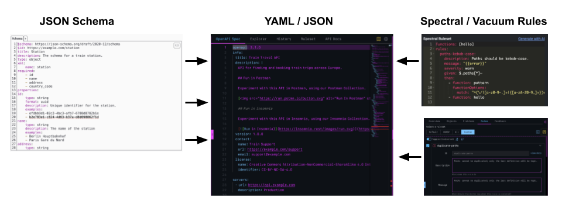

Background
Spectral rules began as a way to lint JSON or YAML OpenAPI documents, providing a configuration format for the Spectral CLI. Spectral saw its first commit in 2018, but was originally born in 2016 as Speccy. Since then, the Spectral rules format has been adopted, forked, and evolved by a number of other services and tools, growing into something more than originally intended—and Spotlight Rules is all about shining a light on this evolution.
Similar to Spectral, the OpenAPI specification began its life as Swagger, which also started as just a configuration file for Swagger UI and Codegen. It took a few years before Swagger found its way to becoming the specification it is today. Acknowledging this journey, I would like to shine a spotlight on the evolution of Spectral rules, its transformation into Vacuum, and the interoperability it provides in solutions like Redocly and APIMATIC, as well as in CI/CD pipelines and IDEs like VS Code—hopefully encouraging more reuse and adoption along the way.
You can use Spectral rules with Spectral CLI today. Both are open source and allow you to quickly get up and running governing your OpenAPI, AsyncAPI, Arazzo, and other specifications. Common rulesets are easy to find on the web and GitHub, and can be generated using your LLM of choice, helping you set up the guardrails your API lifecycle needs.
Spectral Rule Docs
Spectral rules are a formal schema that can be used to describe a set of instructions that can be applied to any YAML or JSON artifact while be crafted in editors, developed within our IDEs, and deployed via CI/CD pipelines. This is the original documentation for Spectral rules, as provided by Stoplight, detailing the properties of rules and rulesets.

Spectral CLI Repo
Spectral is a linting and validation tool designed for API specifications and structured data formats. It allows you to validate and lint OpenAPI v2 & v3.x, AsyncAPI, and Arazzo v1 documents using ready-to-use rulesets, while also supporting custom rulesets for linting any JSON or YAML objects. Spectral helps enforce automated API style guides through rulesets, improving consistency across all your APIs.
A Basic Spectral Rule
YAMLrules:
operation-must-have-summary:
description: Every operation must include a summary.
message: "{{description}} — add a one-line summary to this operation."
severity: error
given: "$.paths[*][get,post,put,patch,delete,options,head,trace]"
then:
field: summary
function: truthyVacuum Rules Spotlight
As Spectral has evolved, it has been adopted by numerous services and tools, but none have embraced and evolved it as deeply as pb33f (Princess Heavy Beef) with their investment in Vacuum, and more importantly, libopenapi and the OpenAPI Doctor. I have seen multiple service and tooling providers invest in the OpenAPI space, but nobody has gone the extra mile like Dave has with his work on the spec and his "forking" of the Spectral CLI configuration file, allowing Spectral rules to be reborn as Vacuum rules.
If you are interested in shifting your schema and API linting into the next gear and getting out on the open road, I recommend losing yourself in the pb33f universe for a month. Play around with the Doctor, explore what Vacuum can do for you locally and in your pipelines. Vacuum is a refreshing look at what is possible when it comes to linting, governing, and guiding your OpenAPI artifacts—and was the inspiration for Spotlight Rules, encouraging others to follow Dave's lead and take rules to new heights.
Available Standards & Tooling
Vacuum Rules Docs
Vacuum Rules are a fork of Spectral rules, while attempting to maintain backward compatibility with Spectral. Vacuum introduces three properties (at last count) to the Spectral rule schema, adding 'howToFix', 'id', and 'category'. Vacuum rules supports both RFC 9535 (the official JSONPath standard) and JSON Path Plus extensions, providing full compatibility with Spectral rulesets.
Vacuum Linter
Vacuum is an ultra-super-fast, lightweight OpenAPI linter and quality checking tool, written in golang and inspired by Spectral. Vacuum is a legit replacement for Spectral CLI, which is written from the ground up to be super fast and handle large OpenAPI artifacts, providing you with a robust tool to bake into your API development lifecycle and pipeline.
The Doctor
The Doctor is a super flashy, but also super powerful OpenAPI editor that also uses Vacuum rules and linter to help you govern and guide the development of your OpenAPI representations of your APIs. The Doctor is a fresh look at what an OpenAPI editor can be, while also pushing forward the conversation around what linting rules can be using Vacuum

A Vacuum Rule with Extended Properties
YAMLrules:
operation-must-have-summary:
description: Every operation must include a summary.
message: "{{description}} — add a one-line summary to this operation."
severity: error
given: "$.paths[*][get,post,put,patch,delete,options,head,trace]"
then:
field: summary
function: truthy
# Vacuum-only extensions
id: OP001
category: Operations
howToFix: Add a one-line summary describing what this operation does and when to use it.Schema Spotlight
The difference between Spectral rules and Vacuum rules exists between the JSON Schema used to validate each specification. I will be watching these schemas, and regularly doing a "diff" on them to understand what is evolving, or not. I encourage other service and tooling vendors to evolve their own vocabulary, and I am happy to shine a spotlight on your approach, highlighting how you are evolving your rules to meet the specific needs of your domain.
JSON Schema to Validate Rules
Spectral Rules JSON Schema
The official JSON Schema for Spectral rules, used to validate rules within the CLI tooling, but you can also use to validate as part of your operations. You can use this JSON Schema in your CLI, editors, IDE, and pipelines to make sure that all of your rules are compliant with the spec, and the tooling you will be using.

Vacuum Rules JSON Schema
The official JSON Schema for Vacuum rules, used to validate rules within the CLI tooling, but you can also use to validate as part of your operations. You can use this JSON Schema in your CLI, editors, IDE, and pipelines to make sure that all of your rules are compliant with the spec, and the tooling you will be using.
IDE Spotlight
You can use linting rules in your IDE, using VSCode plugins provided by both Spectral and Vacuum, and Redocly and APIMATIC both also provide governance tooling that supports Spectral rulesets, but go further with their own approach to linting and governance. These plugins allow teams to lint OpenAPI, AsyncAPI, but really, any JSON or YAML artifact where they are already working.
Using Rules in VSCode
APIMATIC VSCode
This extension lets you easily create, validate and lint your API definition documents in any of the supported formats including OpenAPI. The API definition files are not only validated against standard checks but also linted for ensuring smoother SDK generation, Developer Experience Portal generation and API specification format transformation in order to help you build a remarkable API developer experience.

GitHub Action Spotlight
Both Spectral and Vacuum provide a GitHub Action to support linting of OpenAPI, AsyncAPI, and other artifacts in your GitHub powered CI/CD pipelines. Which, using the severity of your rules and rulesets, you can use to guide and enforce different patterns across your operations via GitHub Actions.
Using Rules in GitHub Actions
Spectral GitHub Action
The Spectral GitHub Action runs your ruleset against OpenAPI, AsyncAPI, Arazzo, and other documents directly in your GitHub Actions workflow, with results surfaced as annotations on pull requests. It supports custom rulesets, configurable fail severity, and works with any YAML or JSON artifact Spectral can lint — making it a drop-in quality gate for any repo already using GitHub Actions.

GitHub Actions Workflow
YAML# .github/workflows/lint-api.yml
name: Lint OpenAPI
on:
pull_request:
paths:
- 'openapi/**'
jobs:
spectral:
runs-on: ubuntu-latest
steps:
- uses: actions/checkout@v4
- name: Lint with Spectral
uses: stoplightio/spectral-action@latest
with:
file_glob: 'openapi/*.yaml'
spectral_ruleset: '.spectral.yml'
vacuum:
runs-on: ubuntu-latest
steps:
- uses: actions/checkout@v4
- name: Lint with Vacuum
uses: daveshanley/vacuum-action@latest
with:
spec: 'openapi/*.yaml'
ruleset: '.vacuum.yml'Ruleset Spotlight
There are many rules and rulesets available out on GitHub and the web, but I think it is important to highlight some of the big brands out there that are using Spectral, and publishing them on GitHub and to their API portals. These are just a sampling of some of the more interesting ones, but I will make sure and add new rulesets that I find which are interesting and useful, adding to this list over time.
Rulesets in the Wild
Adidas
This is a ruleset published by the shoe company Adidas, sharing what they use to govern and lint their own APIs, with the public as part of their overall operations. Providing you with a set of rules that you can cherry pick from when crafting your own rules, as you learn what you need and what you like, based upon what other companies are doing.

Azure
This is a ruleset published by Microsft Azure, sharing what they use to govern and lint their own APIs, with the public as part of their overall operations. Providing you with a set of rules that you can cherry pick from when crafting your own rules, as you learn what you need and what you like, based upon what other companies are doing.
Digital Ocean
This is a ruleset published by Digital Ocean, sharing what they use to govern and lint their own APIs, with the public as part of their overall operations. Providing you with a set of rules that you can cherry pick from when crafting your own rules, as you learn what you need and what you like, based upon what other companies are doing.
OWASP Top 10
This is a ruleset provided by Stoplight, but focusing on the OWASP Top 10, providing a security focused set of rules that can be applied at design-time, during development, or as part of build pipelines. Providing you with a baseline for security across all of your teams which can be introduced and enforced consistently across teams.
Open-Source Tooling Spotlight
Here is where I shine a spotlight on the most interesting open-source tooling that have employed rules as part of what they do, offering the ability to mock, test, automate, edit, govern, and do much more using any Spectral or Vacuum rule, that helps you standardize your approach to producing and consuming APIs.
Commercial Services Using Spectral Rules
Commercial Services Spotlight
I feel it is important to also shine a light on the commercial services that are integrating Spectral into their platforms. While not all of them are investing in and elevating Spectral as a specification, and some are actively extracting value from the ecosystem, I still support commercial solutions putting it to work. Like OpenAPI, keeping Spectral and Vacuum rules open-source, so that it can be used as the life blood of API and schema governance, is part of the reason Spotlight rules exists--this applies in open-source and proprietary solutions.
Commercial Services Using Spectral Rules
APIMATIC
APIMATIC focuses on SDK generation, developer portal creation, and API format transformation. Their Spectral integration validates OpenAPI quality before those workflows run, catching schema issues that would produce broken SDKs or unreadable method names before any code is generated. Rules can enforce that operation IDs follow naming conventions that produce clean SDK method names, and that request and response schemas are well-formed enough to survive type generation across multiple languages.

Bump.sh
Bump.sh is an API change management and documentation platform that uses Vacuum for linting, making it one of the clearest examples of a commercial service that has moved beyond Spectral while maintaining compatibility. Linting with Vacuum rules before publishing to Bump.sh ensures that the changelog, diff, and documentation features work correctly — descriptions, examples, and deprecation notices that Bump.sh surfaces for API consumers are all present and accurate.
Postman
Postman's API governance feature supports configurable Spectral rulesets, letting teams apply rules directly to APIs in their Postman workspace. This integrates governance into the tool where many teams already design and test APIs, surfacing violations in the same UI without requiring a separate CLI run. For teams that standardized on Postman before adopting a formal linting practice, this is often the lowest-friction path to governance adoption.
Redocly
Redocly has its own linting format that extends Spectral's approach with decorators and preprocessors, and provides a migration guide for teams moving from Spectral CLI. Their platform combines API documentation, governance, and developer portal management into a single workflow where lint quality gates are first-class citizens. For teams ready to go beyond the Spectral CLI, Redocly is the most natural next step — and the migration guide makes the transition explicit rather than requiring a rewrite of existing rulesets.
Scalar
Scalar is a modern API reference documentation tool that uses OpenAPI specifications to generate its output. Running Spectral or Vacuum rules against a spec before rendering in Scalar ensures that the documentation is complete — descriptions, examples, and schema documentation that Scalar surfaces for developers are all present and accurate. Scalar also provides its own API client and testing tools, making spec quality at the Spectral layer directly upstream of the developer experience it generates.
Specmatic
Specmatic is a contract-driven development platform that uses OpenAPI specifications as contracts between services. Spectral rules ensure that specs used as contracts are complete and structurally correct before contract testing begins — catching missing response definitions, undocumented error codes, and schema inconsistencies that would cause contract tests to fail in unexpected ways. The combination of Spectral linting and Specmatic contract testing creates a two-layer quality gate: rules enforce spec quality, contracts enforce behavioral correctness.
Treblle
Treblle is an API observability platform that monitors real API traffic and compares it against the OpenAPI specification to detect deviations at runtime. Their Spectral ruleset integration governs spec quality at design time, ensuring that the spec Treblle uses for monitoring is complete enough to do its job accurately. The combination is a natural fit: Spectral rules catch spec quality issues before the API is deployed, and Treblle catches behavioral deviations after it is in production.
Story Spotlight
I have a bunch of articles on API Evangelist I'd like to share, plus I know I've curated other useful takes on how to use Spectral and Vacuum, but here are a handful of the most useful and interesting links on the subject. If there is a story you feel should be here, or want to write a story that pushes forward the conversation, please send me the link and I'll consider adding it here if it adds value.
Some Useful Links

Improve the Quality of Your APIs with Spectral Linting
Spectral is an open source linting tool for APIs, specifically those described using the OpenAPI specification (formerly known as Swagger) and API definitions, developed by Stoplight. It is designed to help developers create, document and maintain APIs that are easy to use and understand.

Securing APIs with the Spectral OWASP Ruleset
Recently I've been on a run of making new all powerful Spectral rulesets, but so far it's been focused on the concept of automating style guides, with the concrete example of the APIs You Won't Hate: API Style Guide showing how it can be done with NPM and tested with Jest. Here's for a new idea though: instead of just making sure you match an organizations style guide, let's look for security issues!

How to Use Spectral with TypeScript
Maintaining consistency, quality, and adherence to design standards is paramount for teams using APIs. API specifications like OpenAPI and AsyncAPI provide a blueprint, but ensuring these blueprints are followed correctly across numerous services and teams can be a daunting challenge. This is where API linting tools come into play, and Spectral stands out as a flexible and powerful open-source option. When combined with TypeScript, Spectral empowers developers to create robust, type-safe custom rules, elevating API governance to a new level.

Custom OpenAPI Style Rules with Spectral
I work quite a bit with OpenAPI specs and with lots of specs and lots of collaborators, keeping the specs all functional (never mind tidy, consistent, or other dreamwords) is a challenge! We use spectral to check our specs, both when we work on them and in the build process. Spectral is great but it has Opinions(TM)! For most users, running Spectral out of the box gives quite a lot of output even on an otherwise valid spec. I do think the default ruleset for Spectral is pretty good, but every situation is different so having your own ruleset to use is a good idea. This post shows how to use a ruleset and some examples.
Concepts Spotlight
I feel it is important to share a couple of driving concepts beyond Spotlight Rules before I finish. First, these rules can be applied to any YAML or JSON artifact, despite the hyper-focus on linting OpenAPI, AsyncAPI, and Arazzo. I lint all my schemas this way. Second, it is important to understand the relationship between JSON Schema and Spectral or Vacuum rules. JSON Schema is about validating the foundation of each JSON or YAML artifact and can be used to guide editing via intellisense extensions, but Spectral and Vacuum rules are how you "finish" your artifact for specific experiences.
The API OAS Checker listed above under tooling does an excellent job of demonstrating this within Monaco Editor, which is the same editor that VS Code uses. The base JSON Schema for the Monaco Editor provides schema validation and intellisense, but Spectral rules and rulesets provide the finishing touches for your YAML or JSON artifact, helping guide anyone toward what they need to complete when it comes to documentation, sandboxes, SDKs, security, and the other experiences that matter most. The relationship between JSON Schema and Spectral rules is what transforms linting and governance into guidance and guardrails.

CI/CD Pipeline Spotlight
While GitHub Actions gets its own spotlight above, rules are equally powerful across the broader CI/CD landscape. GitLab CI, Jenkins, Azure DevOps, CircleCI, and other pipeline platforms can all leverage Spectral and Vacuum to lint and govern your API artifacts as part of your build and deployment process. Whether you are running rules as a quality gate before merging, or as a validation step before deploying to a gateway, CI/CD pipelines are where rules become enforceable policy rather than optional guidance.
The key is that Spectral and Vacuum are both CLI tools at their core, meaning they can be invoked in any pipeline that supports running shell commands. This makes rules portable across your entire CI/CD infrastructure, regardless of which platform you have standardized on. The severity levels of your rules (error, warn, info, hint) give you the flexibility to fail builds on critical issues while still surfacing warnings for teams to address over time.
Using Rules in Your Pipeline
oasdiff
oasdiff is an open-source CLI tool for diffing two OpenAPI specifications and detecting breaking changes. Run it in your pipeline between the base branch and a pull request to gate merges that introduce regressions — missing endpoints, removed parameters, narrowed response schemas — before they reach consumers. It pairs naturally with Spectral or Vacuum linting as a second quality gate focused on backwards compatibility rather than style.

Vacuum Report Formats
Vacuum can emit lint results as JUnit XML (--format junit), HTML dashboards, and JSON — output formats that every major CI platform natively understands. JUnit output in particular lets Jenkins, GitLab CI, Azure DevOps, and CircleCI render Vacuum results as a first-class test report alongside your unit tests, with pass/fail counts and per-rule drill-down, without any custom scripting. This is the key that makes rules platform-portable beyond GitHub Actions.
Spectral in CI/CD
Stoplight's official documentation for integrating Spectral into CI/CD pipelines covers GitLab CI, GitHub Actions, and generic shell-based pipelines. Because Spectral CLI is an npm package, any pipeline with Node.js available can run it with a single npx command against any OpenAPI, AsyncAPI, or Arazzo artifact. The --format flag lets you emit results as JUnit XML, GitHub Annotations, or plain text to match what your platform renders natively.
Azure DevOps Spectral Task
The Azure DevOps Marketplace hosts Spectral pipeline tasks that can be dropped into an azure-pipelines.yml file without installing Node.js or configuring a script step manually. These tasks expose ruleset path, file glob, and fail-on-severity as pipeline inputs, making it straightforward to wire linting into an existing Azure DevOps build definition alongside your test and publish stages.
Pre-commit Hooks
The pre-commit framework lets you run Spectral or Vacuum as a git hook before every commit, catching rule violations on a developer's machine before code ever reaches the pipeline. This closes the loop between IDE linting and CI enforcement — the same rules that surface warnings in VS Code become hard blocks at commit time when severity is set to error. Pre-commit hooks are easy to share across teams via a .pre-commit-config.yaml file checked into the repo.
Running Rules in Any Pipeline
Shell / GitLab CI# Generic shell — any pipeline with Node.js available
npx @stoplight/spectral-cli lint openapi.yaml \
--ruleset .spectral.yml \
--format junit \
--output results.xml \
--fail-severity error
# Or with Vacuum (no Node.js required — single binary)
vacuum lint -r .vacuum.yml -d -j results.xml openapi.yamlGitLab CI Job
YAML# .gitlab-ci.yml
lint-openapi:
image: node:20-alpine
stage: test
script:
- npx @stoplight/spectral-cli lint openapi.yaml
--ruleset .spectral.yml
--format junit
--output results.xml
--fail-severity error
artifacts:
reports:
junit: results.xmlLLM / AI Spotlight
Large language models like Claude, ChatGPT, and others are increasingly capable of generating Spectral and Vacuum rules and rulesets from natural language descriptions. You can describe what you want to enforce -- "all endpoints must have a 400 response", "operation IDs should be camelCase", "every schema must have a description" -- and an LLM can produce a valid rule for you. This dramatically lowers the barrier to entry for teams who understand what they want to govern but are not yet fluent in the rule schema.
Beyond generation, LLMs can also help explain existing rulesets, suggest improvements, translate rules between formats, and even help debug why a rule is not matching the way you expect. When combined with the JSON Schema for Spectral or Vacuum rules, LLMs can validate their own output, creating a tighter feedback loop between intent and implementation. The combination of rules and AI is one of the most promising frontiers for scaling API governance across organizations of any size.
Using LLMs to Work With Rules
Claude
Claude is well-suited for generating Spectral and Vacuum rules from plain-language descriptions of what you want to enforce. Paste your OpenAPI document and describe the rule -- "every POST endpoint must define a 400 and 422 response", "all schema properties need a description" -- and Claude will produce a working rule. It can also explain what an existing rule does, suggest improvements, and debug why a rule is not matching as expected. Providing the Spectral or Vacuum JSON Schema as context further grounds its output and reduces validation errors.
ChatGPT
ChatGPT is another strong option for rule generation and explanation. Its broad training on GitHub content means it has seen many Spectral rulesets and can produce reasonable starting points quickly. It works best when you give it the rule schema as a system prompt or pasted context, then describe what you want to enforce in plain English. Like any LLM output, generated rules should be tested against a real spec before being added to your production ruleset.
GitHub Copilot
GitHub Copilot works particularly well for rule authoring when combined with the Spectral or Vacuum VSCode extension. With the extension providing schema validation and intellisense, Copilot autocompletes rule properties as you type and can generate entire rules from a comment describing the intent. The combination turns rule writing into a conversation -- you describe what you want, Copilot drafts it, and the linting extension validates it in real time without leaving your editor.
Postman Toolbox Governance Playground
Once an LLM has generated a rule for you, the Postman Toolbox Governance Playground is the fastest way to validate that it actually fires correctly against a real spec. Paste the generated rule and an OpenAPI document side by side and see violations highlighted immediately. This tight feedback loop -- generate with an LLM, verify in the playground, refine if needed -- is the most practical workflow for teams building out a ruleset without deep Spectral expertise.
Grounding LLMs with the Rule JSON Schema
The most reliable technique for getting valid rules out of any LLM is to paste the Spectral or Vacuum JSON Schema into your prompt as context before asking it to generate a rule. This tells the model exactly which properties are available, which are required, and what values are valid -- effectively turning the schema into a grammar the LLM writes against. Rules generated this way are far less likely to include invented properties or invalid values, and the LLM can catch and correct its own mistakes before returning output.
Custom Functions Spotlight
Spectral and Vacuum both ship with a set of built-in functions like truthy, falsy, pattern, length, enumeration, and others that cover common validation needs. But the real power of rules emerges when you write custom functions that encode your organization's specific logic. Custom functions allow you to go beyond simple property checks and implement complex validation -- checking that endpoint naming follows your internal taxonomy, that security schemes match your compliance requirements, or that pagination patterns are consistent across all collection endpoints.
Spectral custom functions are written in JavaScript, while Vacuum supports Go-based functions, each offering different trade-offs in terms of ecosystem familiarity and performance. Understanding how to write and distribute custom functions is what separates teams that use rules from teams that truly leverage them as a governance platform. Sharing custom functions as reusable packages further amplifies their value across teams and organizations.
Writing and Sharing Custom Functions
Spectral Built-in Functions Reference
Before writing a custom function, it is worth knowing what ships with Spectral out of the box. The built-in functions -- truthy, falsy, pattern, length, enumeration, casing, defined, undefined, unreferencedReusableObject, and others -- cover a wide range of common validation needs and serve as the clearest guide to the interface your own custom functions must implement. Reading through their source is the fastest way to understand the shape of a Spectral function before writing one from scratch.
Spectral Custom Functions Docs
Spectral custom functions are written in JavaScript and follow a simple interface: they receive the value at the JSONPath target, any options passed from the rule, and context about the full document, then return an array of error objects or nothing. The official documentation walks through this interface, shows how to register a custom function in a ruleset file, and covers how to handle async functions for cases where validation requires external lookups. Custom functions unlock validation logic that no built-in function can express.
Vacuum Custom Functions Docs
Vacuum custom functions are written in Go, which means they compile into the Vacuum binary and run at native speed rather than in a JavaScript sandbox. This makes Vacuum custom functions a strong choice for teams with Go expertise or for pipelines where linting performance on large spec collections is a constraint. The pb33f documentation covers the function interface, how to register functions in a Vacuum configuration, and the trade-offs between Spectral-compatible JS functions and Vacuum-native Go functions.
Testing Custom Functions with Jest
Custom functions that are not tested are custom functions that will silently break. The APIs You Won't Hate community has established a pattern of unit testing Spectral rules and custom functions using Jest, treating each rule like a function to be tested against known-good and known-bad OpenAPI fixtures. This approach catches regressions when rules are updated, documents intent through test cases, and makes it safe to share custom functions across teams as versioned npm packages.
@stoplight/spectral-functions on npm
The @stoplight/spectral-functions package is the official home of Spectral's built-in functions and serves as the reference implementation for how a publishable custom functions package should be structured. Teams that want to share custom functions across multiple repos can follow the same pattern -- export functions from a package, publish to npm or a private registry, and reference the package in any ruleset file. This is how governance scales beyond a single team without duplicating logic across repos.
Writing and Referencing a Custom Function
JavaScript / YAML// functions/requireExample.js
// Returns a violation if a schema has no example or examples property
export default (input, options, context) => {
if (input?.example === undefined && input?.examples === undefined) {
return [{
message: `${context.path.join('.')} must define an example or examples.`,
}];
}
};Referencing the Function in a Ruleset
YAML# .spectral.yml
functions:
- ./functions/requireExample
rules:
schema-must-have-example:
description: All schemas must define at least one example.
severity: warn
given: "$.components.schemas[*]"
then:
function: requireExampleRule Property Reference Spotlight
Understanding the anatomy of a rule is essential for anyone writing or maintaining rulesets. Both Spectral and Vacuum rules share a common core of properties -- description, message, given, then, severity, formats, and resolved -- but Vacuum extends this with additional properties like howToFix, id, and category. Knowing what each property does, how they interact, and where they diverge between implementations helps you write rules that are portable, maintainable, and expressive.
The "given" property uses JSONPath to target specific locations within your API artifact, while "then" specifies what function to apply and what the expected outcome should be. The "severity" property (error, warn, info, hint) determines how violations are reported and whether they can block builds. Understanding the "formats" property is key for writing rules that apply only to specific specification versions, like OpenAPI 3.1 versus 2.0. A clear reference for these properties, with side-by-side comparisons between Spectral and Vacuum, helps teams make informed choices about which properties to use and how to structure their rulesets for maximum impact.
Rule Property Reference
Spectral Rule Properties
The official Spectral documentation for rule properties covers every field available in a rule definition -- description, message, given, then, severity, formats, and resolved -- with explanations of what each does and how they interact. This is the primary reference for anyone writing or reviewing Spectral rules, and understanding each property is what separates rules that technically work from rules that are readable, maintainable, and portable across tooling.
Vacuum Rule Properties
Vacuum extends the Spectral rule schema with three additional properties: howToFix, which provides human-readable remediation guidance surfaced in the Vacuum report and Doctor UI; id, which gives a stable identifier for a rule independent of its key name; and category, which groups rules for filtering and reporting. These extensions are what elevate Vacuum rules from linting configuration into a governance platform with actionable, categorized feedback rather than a flat list of violations.
JSONPath Plus
The "given" property in a Spectral rule uses JSONPath Plus -- an extended flavor of JSONPath that adds recursive descent, union expressions, filter scripts, and other operators beyond what the base specification defines. Understanding JSONPath Plus is essential for writing "given" expressions that target the right locations in an OpenAPI, AsyncAPI, or Arazzo document. The JSONPath Plus repository includes an interactive playground where you can paste a document and test a path expression before putting it in a rule.
RFC 9535 — JSONPath Standard
RFC 9535 is the IETF standard that formally defines JSONPath, published in 2024. Vacuum supports RFC 9535 alongside JSONPath Plus extensions, which means rules written to the standard will work in both Vacuum and Spectral with no modification. For teams building rulesets intended to be portable across tools, writing "given" expressions that stay within RFC 9535 is the safest approach -- understanding where JSONPath Plus diverges from the standard helps you make that call deliberately rather than by accident.
Spectral Formats Reference
The "formats" property scopes a rule to specific specification types and versions -- oas2, oas3, oas3.1, asyncapi2, and others -- so rules only fire against documents they are designed for. Getting this wrong is one of the most common sources of false positives in mixed rulesets that govern both OpenAPI 2.0 and 3.x documents. The formats reference lists every built-in format string, explains how to define custom format detectors, and shows how to combine multiple formats when a rule applies across more than one specification type.
Every Rule Property, Annotated
YAMLrules:
operation-must-have-summary:
# Human-readable explanation of what the rule checks
description: Every operation must include a summary.
# Message shown on violation; {{description}} and {{path}} are available
message: "{{description}} — missing at {{path}}"
# error | warn | info | hint
# error fails the CLI (with --fail-severity error); others surface without blocking
severity: error
# JSONPath targeting the location(s) in the document to evaluate
given: "$.paths[*][get,post,put,patch,delete]"
# The function to apply; field scopes it to a property of the matched value
then:
field: summary
function: truthy
# Scope this rule to specific spec versions; omit to apply to all formats
formats:
- oas3
# Whether to resolve $ref pointers before evaluating (default: true)
resolved: true
# Vacuum-only extensions
id: OP001
category: Operations
howToFix: Add a one-line summary describing what this operation does.Distribution Patterns Spotlight
How organizations structure and distribute their rulesets matters as much as the rules themselves. Some teams maintain a single monorepo of rules shared across all API teams, while others publish rulesets as npm packages or reference remote URLs. The choice between a centralized governance team owning the ruleset versus a federated model where each team extends a base ruleset reflects broader organizational decisions about autonomy and consistency.
Patterns around severity are equally important. Many organizations start with all rules set to "warn" and progressively promote them to "error" as teams adopt and comply. Others use a tiered approach -- a "must" ruleset that blocks builds and a "should" ruleset that generates reports. Understanding these patterns, and learning from how companies like Adidas, Azure, and others have structured their governance programs, helps teams avoid common pitfalls and accelerate their own governance maturity.
How to Structure and Share Rulesets
Spectral Rulesets and the "extends" Property
The "extends" property is the foundation of ruleset distribution. It lets any ruleset inherit from one or more base rulesets -- whether published as an npm package, referenced by a remote URL, or defined in a local file -- and then selectively override, disable, or add rules on top. This is how teams share a centrally maintained base ruleset while giving individual API teams the autonomy to tune severity levels or add domain-specific rules without forking the whole thing.
Publishing Rulesets to npm
Publishing a ruleset as an npm package is the most scalable way to share rules across repos and teams. Once published, any project can reference the package in its .spectral.yml with a single "extends" line, and updates are consumed via a normal package version bump. Scoped packages under your organization's npm namespace (e.g. @your-org/spectral-ruleset) make ownership clear and allow teams to pin to a specific version while gradually adopting new rules as they are promoted from warn to error.
Remote URL Rulesets
Spectral and Vacuum can both extend a ruleset referenced by a remote URL rather than a local file or npm package. This means a central governance team can host a single authoritative ruleset file -- on GitHub Pages, a CDN, or an internal server -- and every team's .spectral.yml points at it. Updates are picked up automatically on the next lint run without any package version bump required. The trade-off is that remote rulesets introduce a network dependency at lint time, which is worth considering for offline or air-gapped environments.
Monorepo Ruleset Pattern
Teams that maintain many APIs in a monorepo can keep a shared ruleset package alongside their API specs and reference it locally. npm or pnpm workspaces make this straightforward -- the ruleset lives in packages/spectral-rules, each API's .spectral.yml extends it with a workspace path, and changes to the shared ruleset are immediately visible across all APIs without a publish cycle. This is the lowest-friction starting point for organizations beginning to centralize governance before they are ready to publish to a registry.
Tiered Severity Patterns
A common governance maturity pattern is to run two rulesets side by side: a "must" ruleset where violations are severity "error" and will fail builds, and a "should" ruleset where violations are "warn" and generate a report without blocking. Teams start with everything as "warn", measure adoption, and progressively promote rules to "error" as compliance improves. This avoids the big-bang governance problem where a strict ruleset lands and immediately breaks dozens of pipelines, undermining trust in the governance program before it has a chance to prove its value.
Three Ways to Extend a Base Ruleset
YAML# .spectral.yml
extends:
# 1. npm package — versioned, installed via package.json, shareable across repos
- "@your-org/spectral-ruleset"
# 2. Remote URL — always resolves to the latest hosted version, no install needed
- "https://api-standards.your-org.com/spectral.yml"
# 3. Local file — monorepo workspace pattern, no publish cycle required
- "../packages/api-rules/ruleset.yml"
rules:
# Promote a warning from the base ruleset to a build-blocking error
operation-description:
severity: error
# Turn off a rule that does not apply to this service
info-contact:
severity: offAsyncAPI & Arazzo Spotlight
While much of the conversation around Spectral and Vacuum rules focuses on OpenAPI, both tools support linting AsyncAPI and Arazzo specifications as well. AsyncAPI describes event-driven APIs -- WebSockets, Kafka, MQTT, and other asynchronous patterns -- and benefits from the same governance approach that has proven valuable for REST APIs. Ensuring consistent channel naming, message schema documentation, and security scheme definitions across your event-driven architecture is just as important as governing your HTTP endpoints.
Arazzo, the newer specification for describing API workflows and sequences of API calls, represents the next frontier for rules-based governance. As organizations move beyond individual API endpoints toward orchestrated workflows, the ability to lint and validate workflow definitions ensures that integration patterns remain consistent and well-documented. Writing rules for AsyncAPI and Arazzo follows the same patterns as OpenAPI -- the "formats" property in your rules controls which specification type each rule applies to, making it straightforward to maintain multi-spec rulesets.
AsyncAPI & Arazzo Tools and Resources
AsyncAPI Specification
AsyncAPI is the open specification for event-driven APIs, covering WebSockets, Kafka, MQTT, AMQP, and other asynchronous messaging patterns. Like OpenAPI for REST, AsyncAPI provides a structured, machine-readable description of channels, messages, schemas, and security -- the raw material that Spectral and Vacuum rules operate against. If your organization runs any event-driven infrastructure alongside your HTTP APIs, AsyncAPI is the specification that brings the same governance discipline to your async surface area.
AsyncAPI Studio
AsyncAPI Studio is a browser-based editor for authoring and validating AsyncAPI documents, with real-time linting feedback as you type. It is the quickest way to get hands-on with AsyncAPI without any local setup, and a good environment for testing how rules fire against async documents before wiring them into a pipeline. The Studio uses Spectral under the hood, so rules that work here will work in your CLI and CI/CD pipelines without modification.
@stoplight/spectral-asyncapi
The official Spectral AsyncAPI ruleset provides a set of default rules for linting AsyncAPI documents, covering required fields, schema consistency, and structural correctness. It is the AsyncAPI equivalent of the built-in OpenAPI ruleset and a practical starting point before writing any custom rules. Teams building governance programs for event-driven APIs can extend this package the same way they extend the OpenAPI ruleset -- inheriting the defaults and adding organization-specific rules on top.
Arazzo Specification
Arazzo is the OpenAPI Initiative's specification for describing sequences of API calls -- workflows that span multiple endpoints, carry state between steps, and model the kinds of multi-step integrations that OpenAPI alone cannot express. Published by the OAI alongside OpenAPI and AsyncAPI, Arazzo brings the same design-time governance opportunity to API workflows that OpenAPI brought to individual endpoints. As Arazzo adoption grows, rules-based linting of workflow definitions will become as routine as linting an OpenAPI document today.
Spectral Arazzo Ruleset
Spectral added native Arazzo linting support with a built-in Arazzo ruleset, making it one of the first linting tools to govern workflow definitions alongside OpenAPI and AsyncAPI in the same pipeline step. The built-in ruleset validates structural correctness of Arazzo documents -- step references, workflow inputs, success and failure criteria -- and serves as the starting point for teams writing custom Arazzo rules. Setting the "formats" property to "arazzo1" in a rule scopes it exclusively to Arazzo documents within a multi-spec ruleset.
Scoping Rules to Specification Types
YAML# Use the formats property to target rules at specific specification types
rules:
# Fires only on AsyncAPI documents
channel-must-have-description:
description: Every channel must have a description.
severity: error
formats: [asyncapi2]
given: "$.channels[*]"
then:
field: description
function: truthy
# Fires only on Arazzo workflow documents
step-must-reference-operation:
description: Every workflow step must reference an operationId.
severity: error
formats: [arazzo1]
given: "$.workflows[*].steps[*]"
then:
field: operationId
function: truthy
# No formats property — applies to all OpenAPI versions (oas2, oas3, oas3_1)
operation-must-have-summary:
description: Every operation must include a summary.
severity: error
given: "$.paths[*][get,post,put,patch,delete]"
then:
field: summary
function: truthyAPI Gateway Integration Spotlight
API gateways like Kong, Apigee, AWS API Gateway, and Azure API Management often consume OpenAPI specifications to configure routing, validation, and policies. Running Spectral or Vacuum rules against your OpenAPI documents before they are deployed to a gateway ensures that specifications meet the quality bar required for reliable gateway configuration. A missing security scheme, an undocumented path parameter, or an inconsistent response schema can all cause issues at the gateway level that are much cheaper to catch during development.
Some gateway platforms are beginning to integrate linting directly into their import and deployment workflows, but even where native integration does not exist, adding a linting step to your deployment pipeline between "spec authored" and "spec deployed to gateway" creates a powerful quality gate. Rules can be tailored to the specific requirements of your gateway platform -- for example, ensuring that all endpoints define rate limiting headers, or that authentication schemes match what the gateway is configured to enforce.
Linting Before Gateway Deployment
Kong decK
decK is Kong's CLI tool for managing gateway configuration as code, with support for importing OpenAPI specifications directly into Kong. Adding a Spectral or Vacuum lint step before running "deck sync" ensures that only specifications meeting your quality bar are ever promoted to the gateway. Rules can be tailored to Kong-specific requirements -- verifying that every endpoint defines rate limiting headers, that authentication schemes are present, or that response schemas are complete enough to generate useful error messages at the gateway layer.
Apigee
Apigee uses OpenAPI specifications to configure API proxies, generate documentation, and enforce policies. Running Spectral or Vacuum rules against a spec before it is imported into Apigee catches quality issues that would otherwise surface as misconfigured proxies or incomplete developer portal documentation. Gateway-specific rules can verify that security definitions match Apigee's supported schemes, that quota and spike arrest annotations are present, and that all paths are documented to the level Apigee's portal generation expects.
AWS API Gateway
AWS API Gateway imports OpenAPI specifications to configure REST and HTTP APIs, with the spec driving routing, request validation, and integration definitions. A linting gate before "aws apigateway import-rest-api" or a SAM/CDK deployment ensures that specs are valid for import and meet the structural requirements AWS enforces. Rules can check for AWS-specific extension properties, verify that all endpoints define their request models, and confirm that response schemas are present for the status codes API Gateway will be validating.
Azure API Management
Azure API Management imports OpenAPI specifications to create APIs, configure operations, and populate the developer portal. The Azure CLI, Bicep, and ARM templates all support spec-driven APIM configuration, making it straightforward to insert a Spectral or Vacuum lint step in an Azure DevOps pipeline before the deployment task runs. Rules tailored to APIM can enforce that all operations define subscription key requirements, that response schemas support APIM's mock response policy, and that tags are present for organizing the developer portal.
Redocly CLI push
Redocly CLI combines linting and publishing into a single workflow via "redocly lint" followed by "redocly push", making it one of the most integrated examples of rules as a gateway pre-deployment gate. The lint step runs your configured ruleset against the spec and blocks the push on any error-severity violations, ensuring that only compliant specs reach your Redocly-hosted portal or downstream gateway. For teams already using Redocly for documentation, this pattern extends the same governance to the deployment pipeline with minimal additional configuration.
Next Steps Spotlight
I wanted to get Spotlight Rules published, with the history, narrative, rulesets, tooling, and other resources published. Next I will work on cleaner documentation that helps shine a light on the properties of Spectral rules, but also how they have been extended by Vacuum rules. I have a few of my own extensions I will add into the mix, with tagging to align with OpenAPI 3.2, and begin adding more guidance for teams when it comes to using the LLM of your choice to generate rules and rulesets.
If you have any questions, comments, or contributions, please hit me up on LinkedIn or feel free to email me directly at info@apievangelist.com. I am looking to continue elevating rules, and begin to talk more about the challenges that exist across all of the standards, services, and tooling that I have put a spotlight on, and see how we can begin moving beyond just API design governance, and apply rules to all aspects of our operations, at any stage of the lifecycle.